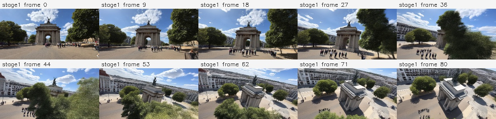
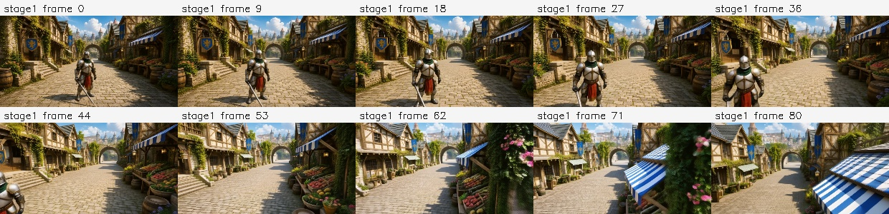
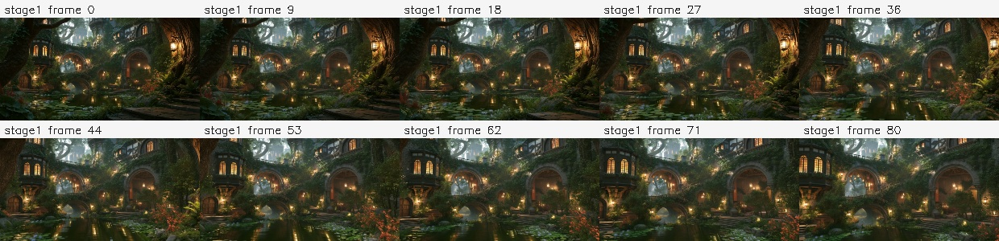
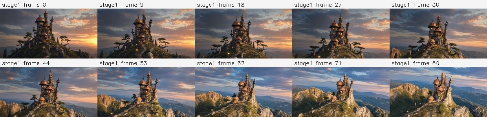

Reference-video conditioning
Controlled A/C comparisons across four scenes. C receives ten frames sampled uniformly from the first stage. Each pair uses the same first-stage output, second-stage camera controls, checkpoint, seed and inference steps.
Stone arch plazaKnight streetIvy courtyardWizard tower at dusk
Stone arch plaza
Same first stage and trajectory; the second stage uses 4 inference steps in both A and C.
C gives the statue a more articulated outline in some later frames, but also synthesizes a different background. A consistent overall geometry improvement is not established.
View C on its own
Inspect the ten reference frames

Knight street
Same first stage and trajectory; the second stage uses 8 inference steps in both A and C.
C introduces a knight-like fragment at the left edge around frame 100, absent in A. The broad street motion remains similar, but the added object is an unwanted change.
View C on its own
Inspect the ten reference frames

Ivy courtyard
Same first stage and trajectory; the second stage uses 4 inference steps in both A and C. Its shared first stage comes from an earlier 30-step run. Both second stages are new 4-step outputs.
A and C are visually very close in this scene. The arch layout, lighting and camera motion remain similar; no clear consistency gain is established.
View C on its own
Inspect the ten reference frames

Wizard tower at dusk
Same first stage and trajectory; the second stage uses 4 inference steps in both A and C.
C changes fine appearance, but a clear improvement in tower geometry or the stage boundary is not established in this trial. Compare the synchronized views at the same time points.
View C on its own
Inspect the ten reference frames
